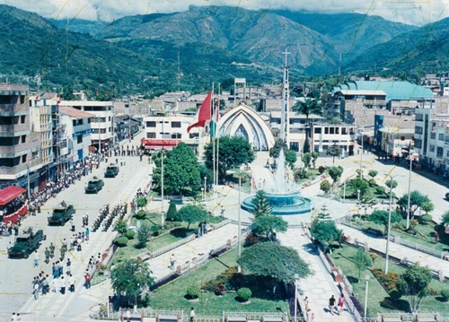

Conociendo Cajamarca
Echa un vistazo a las actividades del departamento
PROVINCIA DE JAEN

Jaen
Ubicada en la región norte del departamento, la provincia de Jaén limita con las de San Ignacio y Cutervo, al norte y sur, respectivamente. Hacia el oeste limita con el departamento de Piura, y hacia el este, con el de Amazonas.
©opyright / Derecho de Autor - 2017 "Javier Marin Rubio"